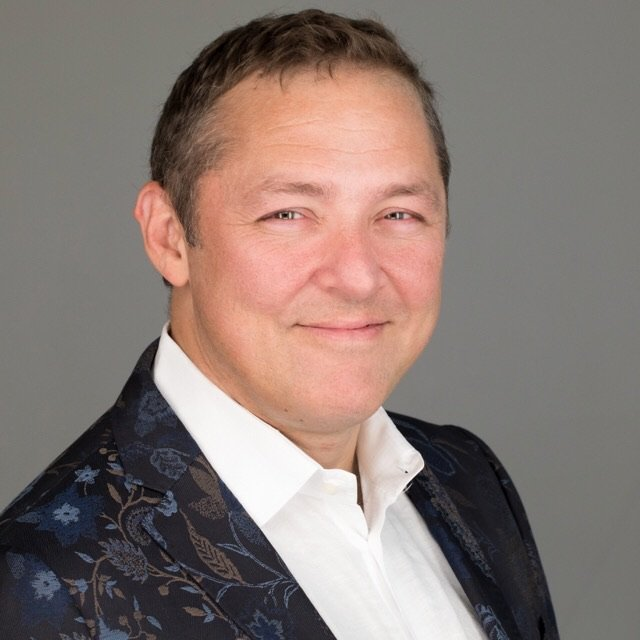

Martín Farach‑Colton
Leonard J. Shustek Professor of Computer Science
Chair, Department of Computer Science and Engineering
Tandon School of Engineering, New York University
About
I am the Leonard J. Shustek Professor of Computer Science and Chair of the Department of Computer Science and Engineering at NYU’s Tandon School of Engineering, and an affiliated faculty member of the NYU Center for Data Science. I lead a research group working on algorithms and data structures and their use in real systems: storage and file systems, memory hierarchies, hashing and filters, and computational biology.
Before NYU, I spent nearly thirty years on the faculty at Rutgers, most recently as Distinguished Professor of Computer Science, after a postdoc at DIMACS. I have worked in industry at Bell Labs and as a Senior Research Scientist at Google, and I was the founder and CTO of Tokutek, whose Fractal Tree indexing technology, built on my research on cache-oblivious and write-optimized data structures, was acquired by Percona. I am Editor-in-Chief of ACM Transactions on Parallel Computing.
I received an M.D. from the Johns Hopkins School of Medicine and a Ph.D. in computer science from the University of Maryland, College Park.
Personal
I train in Brazilian jiu-jitsu: I won a bronze medal at the 2015 IBJJF World Master Championship and received my black belt from Russell Kerr in 2018.
Outside of research, I have served on many nonprofit boards, most of them supporting LGBTQ youth:
- 2025
- Luminary Award for service to the Ali Forney Center
- 2020–22
- The Trevor Project, Board of Directors
- 2016–18
- Transgender Legal Defense and Education Fund, Board of Directors; Development Committee Chair
- 2016–18
- Johns Hopkins Center for Talented Youth, Board of Advisors
- 2013–20
- Ali Forney Center, Board of Directors; Nominating and Board Governance Committee Chair
- 2008–14
- Lambda Legal, Board of Directors; Development and Board Governance Committee Co-Chair
Research Interests
- Algorithms & data structures
- Hashing & filters
- Storage & file systems
- Write-optimized data structures
- Memory hierarchies & virtual memory
- History independence
- Vector databases
- String algorithms & computational biology
Research Group
Current Ph.D. Students
- Yarin Shechter
- Zofia Štefankovič
Graduated Ph.D. Students
- Hanna Komlós 2025 · Max Planck Institute for Informatics
- Guido Tagliavini Ponce 2023 · Snowflake
- Alex Conway 2020 · Cornell University
- Meng-Tsung Tsai 2017 · Academia Sinica
- Rohan Fernandes 2007 · J.P. Morgan
- Yang Huang 2007 · NIH
- Miguel Mosteiro 2006 · Pace University
- Vicky Choi 2001 · Virginia Tech
- Rahul Shah 2001 · Louisiana State University
- Gabriela Hristescu 2000 · Rowan University
- Rick Desper 1998 · University of Maryland
- Vincenzo Liberatore 1998 · Case Western Reserve University
Postdoctoral Fellows
- David Tench 2021–2023, CRA Fellow · Lawrence Berkeley National Laboratory
- Elizabeth Sweedyk 1997–1999 · Harvey Mudd College
- Shibu Yooseph 1997–1998 · University of Central Florida
- Scott Decatur 1996–1997 · GMO
- Mona Singh 1996–1997 · Princeton University
- Richa Agarwala 1994–1996 · NIH
- Vineet Bafna 1994–1996 · UC San Diego
- R. Ravi 1994–1995 · Carnegie Mellon University
- S. Muthukrishnan 1994–1995 · Amazon
Research Funding
I have been principal investigator on more than twenty research grants from the National Science Foundation, the Department of Energy, the Sloan Foundation, and other sponsors, including an NSF CAREER Award, and co-PI on grants from NSF and NIH. Current and recent grants:
- 2026–30
- Co-PI, NSF: Graph-based Vector Databases, from Theory to Practice
- 2023–26
- PI, NSF: Algorithmic Performance through History Independence
- 2021–24
- PI, NSF: Adventures in Flatland: Algorithms for Modern Memories
- 2019–21
- PI, NSF: FTFS: A Read/Write-Optimized Fractal Tree File System (accomplishment-based renewal)
- 2017–20
- PI, NSF: The Dictionary Problem Reconsidered
- 2016–20
- PI, NSF: Theory and Implementation of Dynamic Data Structures for the GPU
- 2015–18
- Co-PI, NIH: Meaningful Data Compression and Reduction of High-Throughput Sequencing Data
- 2013–16
- PI, NSF BIGDATA: Eliminating the Data Ingestion Bottleneck in Big-Data Applications
Honors
- 2025
- Richard M. Karp Distinguished Lecture, Simons Institute for the Theory of Computing
- 2024
- Fellow, AAAS
- 2023
- Member, Academia Nacional de Ciencias Exactas, Físicas y Naturales (Argentina)
- 2022
- Fellow, IEEE
- 2021
- Fellow, ACM
- 2021
- Fellow, SIAM
- 2016
- NetApp Faculty Fellow
- 2013
- Distinguished Alumnus, University of Maryland Department of Computer Science
- 1996
- Alfred P. Sloan Research Fellowship
- 1995
- NSF CAREER Award
Paper Awards
- 2026
- SPAA Outstanding Paper Award
- 2025
- SPAA Distinguished Paper Award
- 2024
- PODS Best Paper Award; ACM SIGMOD Research Highlight Award
- 2023
- ASPLOS Distinguished Paper Award; IEEE Micro Top Picks
- 2016
- FAST Best Paper Award
- 2012
- LATIN Imre Simon Test-of-Time Award
Selected Publications
- The Local/Global Disk Problem: How to Use Shared High-Bandwidth Storage Economically SPAA 2026 Outstanding Paper
- Don’t Melt Your Cache: Low-Associativity with Heat-Sink SPAA 2025 Distinguished Paper
- Optimal Bounds for Open Addressing Without Reordering FOCS 2024 · covered by Quanta and Wired
- Nearly Optimal List Labeling FOCS 2024 · covered by Quanta and Wired
- History-Independent Dynamic Partitioning: Operation-Order Privacy in Ordered Data Structures PODS 2024 Best Paper
- Mosaic Pages: Big TLB Reach with Small Pages ASPLOS 2023 Distinguished Paper
- On the Optimal Time/Space Tradeoff for Hash Tables STOC 2022 · covered by Quanta
- Optimizing Every Operation in a Write-Optimized File System FAST 2016 Best Paper
- Cache-Oblivious B-Trees SIAM Journal on Computing, 2005 · FOCS 2000
- Finding Frequent Items in Data Streams Theoretical Computer Science, 2004 · ICALP 2002
- The LCA Problem Revisited LATIN 2000 Test-of-Time Award
- Optimal Suffix Tree Construction with Large Alphabets FOCS 1997